Lecture 11 | PUFY 1100 A31 Sustainable Systems 12953
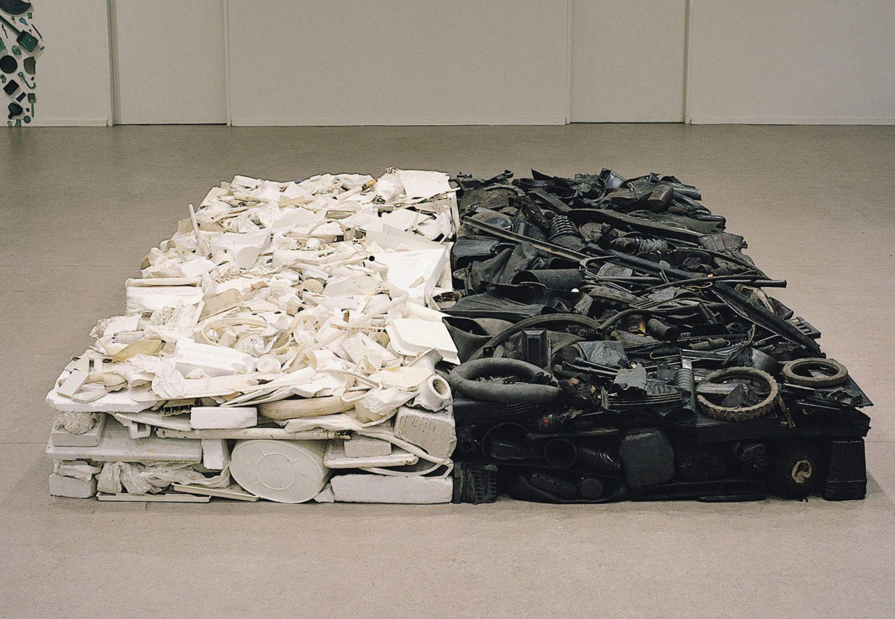
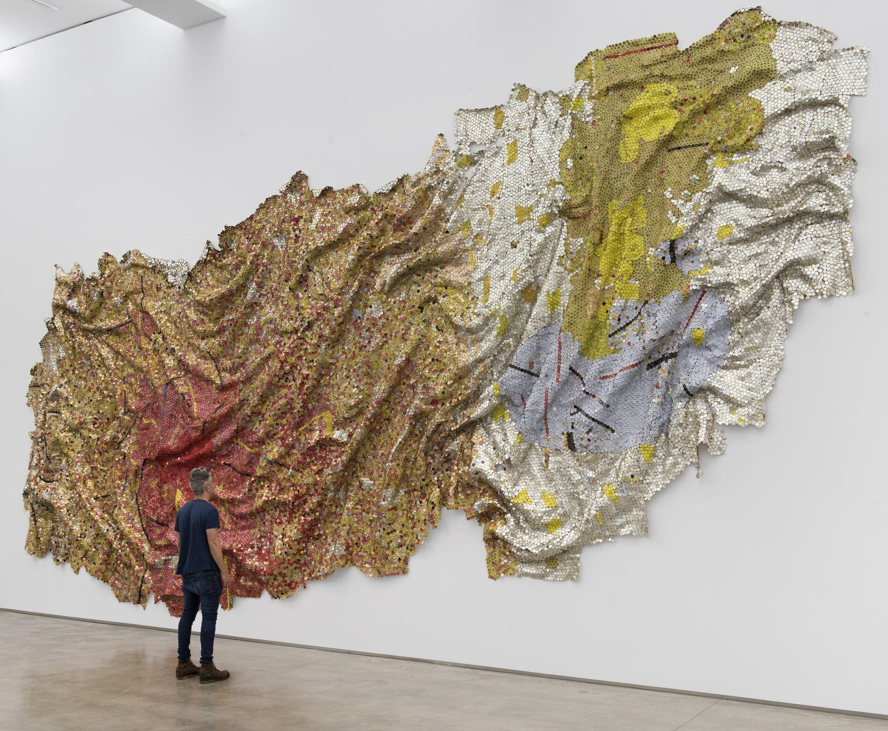
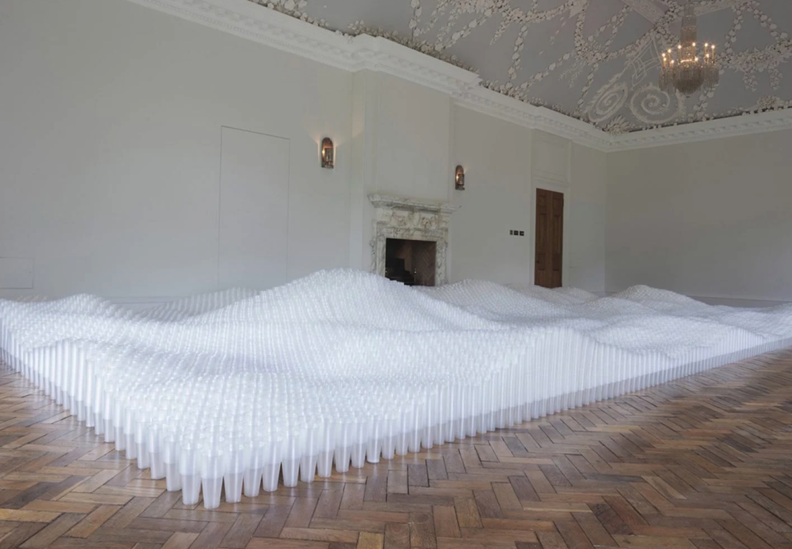
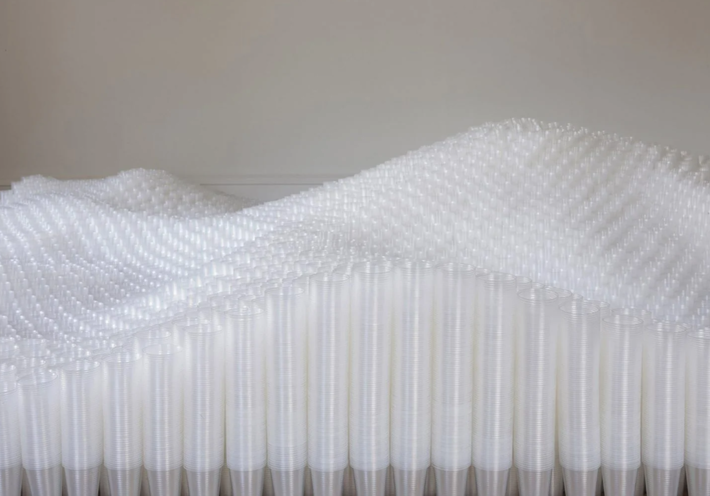
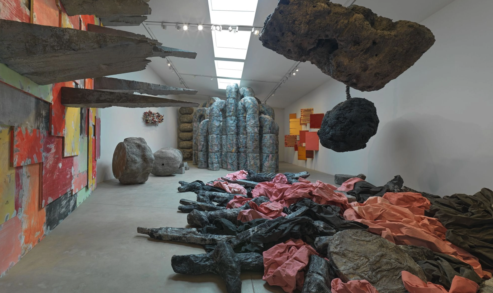
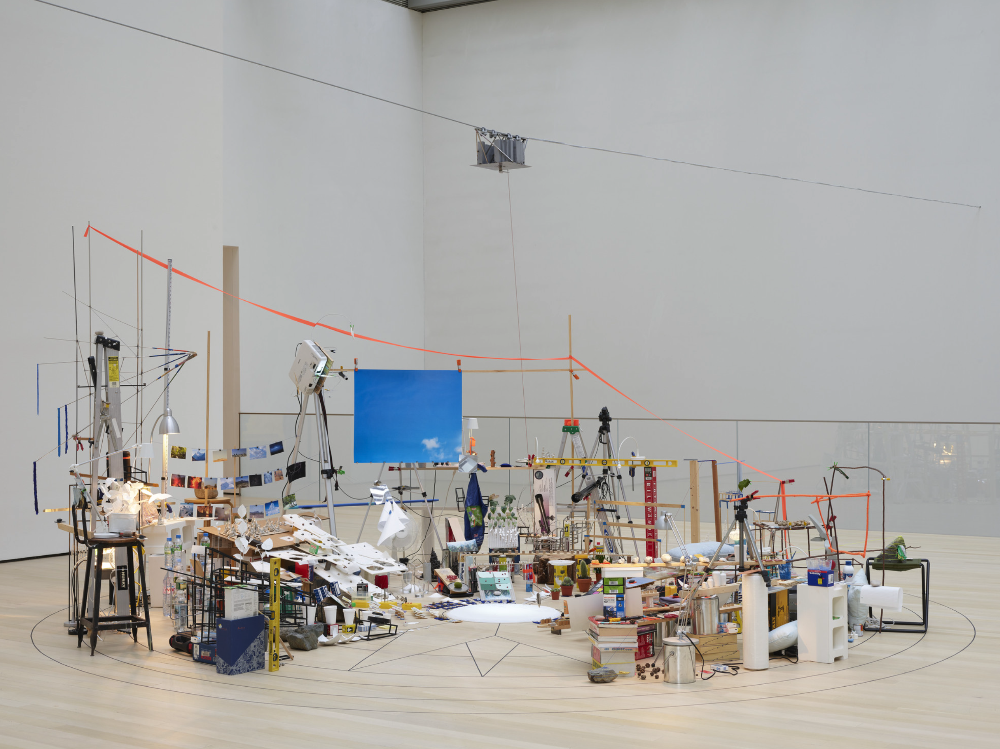
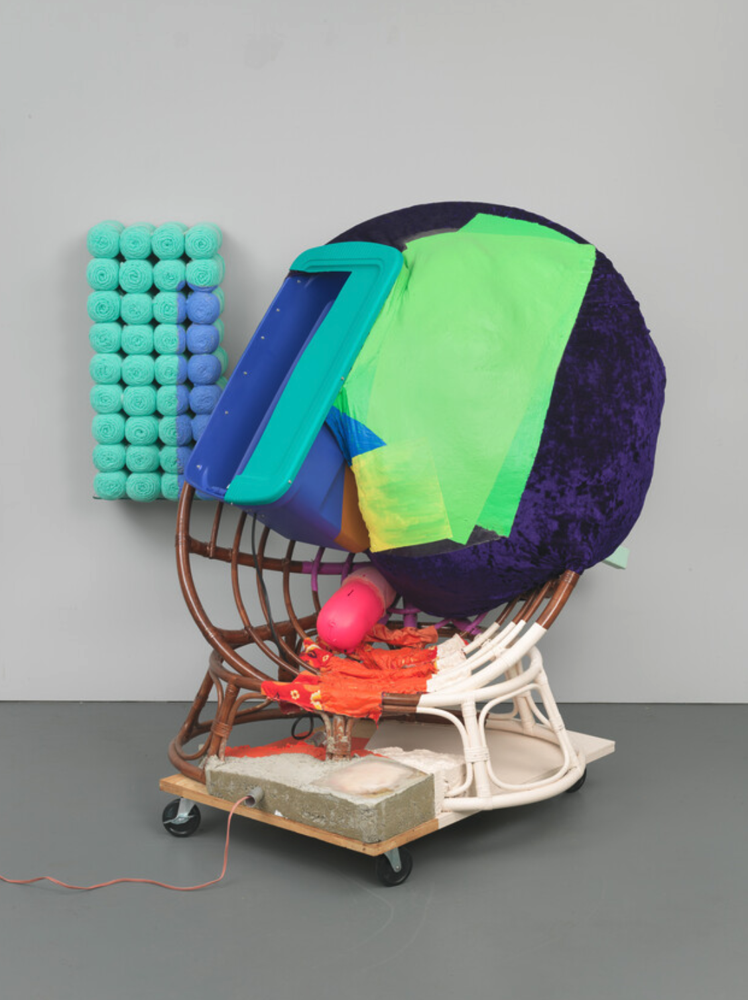
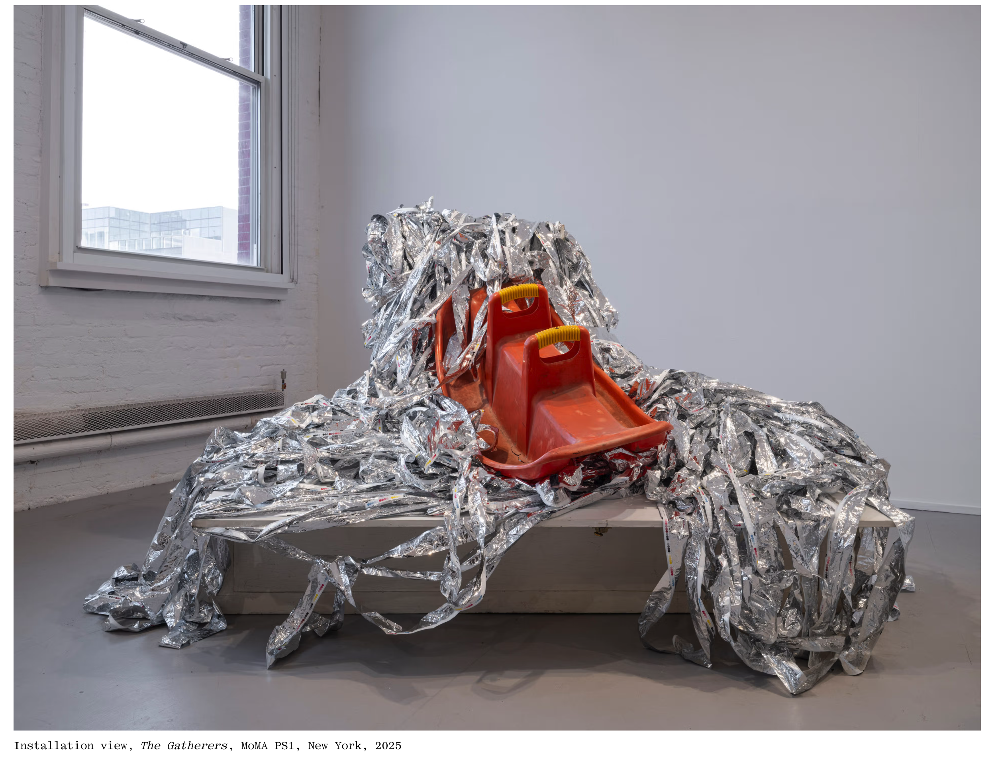
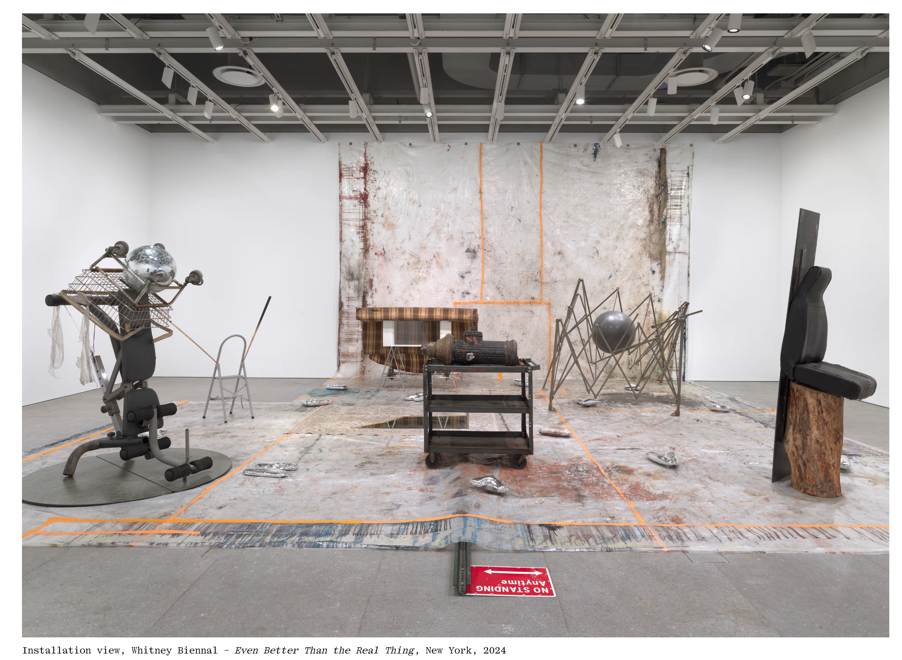
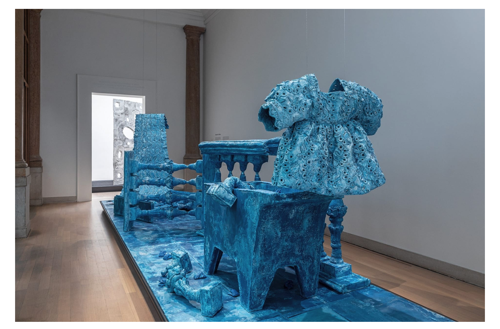
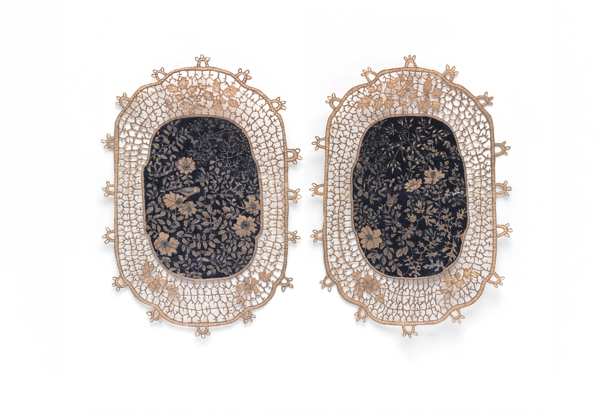
| PHYSICAL | STRUCTURAL | SPATIAL | VISUAL |
|---|---|---|---|
| Cut | Connect | Assemble | Color |
| Fold | Stack | Position | Contrast |
| Flatten | Repeat | Balance | Compose |
| Mold | Accumulate | Relate | Reframe |
These are operations, not predetermined outcomes.
Do not begin with what you intend to make. Begin with what the materials can do.